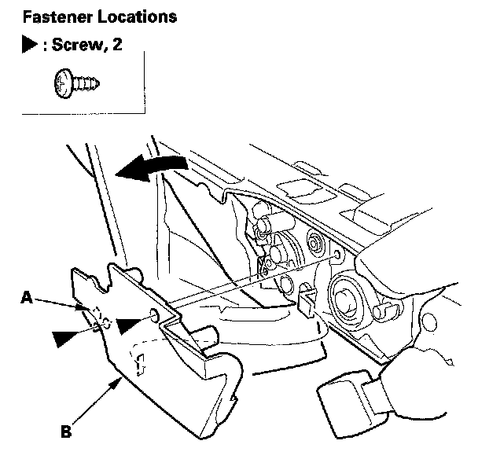
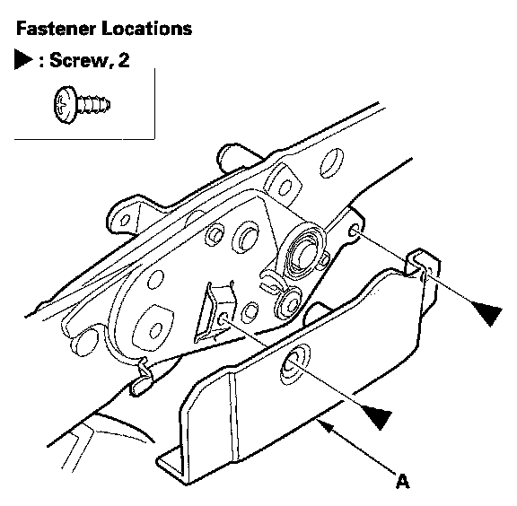
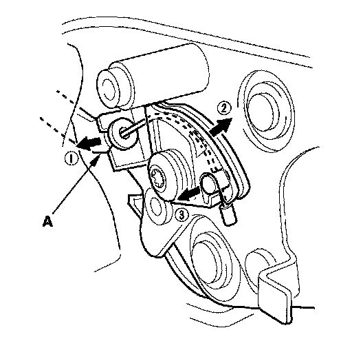
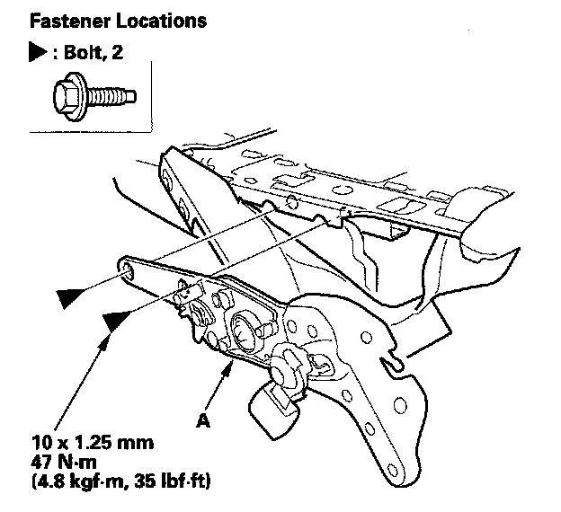

Seat Latch: Service and Repair
Third Row Seat Latch ReplacementNOTE:
- Put on gloves to protect your hands.
- Take care not to bend the seat-back recline cable.
- The left third row seat is shown, the right third row seat is similar.
1. Remove the left third row seat or right third row seat.
2. Remove the seat-back.
3. Remove the screws securing the seat-back recline lever
4. Remove the back cover, then release the hooks from behind the seat-back, as needed

5. Remove the screw and release the hook (A), then remove the outer latch cover (B).

6. If necessary, remove the screws, then remove the inner latch cover (A).

7. Disconnect the seat-back recline cable (A).

8. Remove the bolts, then remove the latch (A).
9. Install the latch in the reverse order of removal, and note these items:
- Make sure the seat-back recline cable is connected securely.
- Make sure the seat unlatches properly and latches securely.